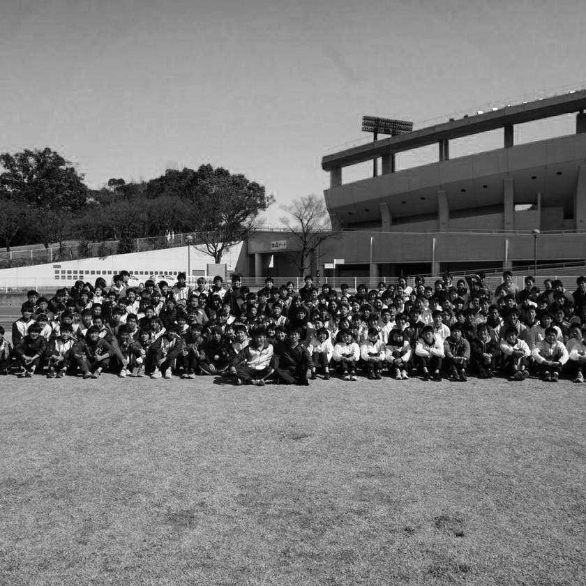

ABOUT
エルザ 小泉加緒莉
1998年、岐阜市生まれ。高校卒業後、地元に近い名古屋市立大学芸術工学部に入学。その後、同学部でグラフィックデザインを中心にWebデザイン等のデザインの基礎を学ぶ。また小学生時代から続けている陸上競技を大学でも続け、日々鍛錬している。短距離種目を専門とし、100m12.76、200m27.30のPBを持つ。旅行が好きで、長期休暇には必ず何処かの土地に赴いている.

SKill
Ai
Ps
HTML
&
CSS
Profile
- 1998 岐阜市生まれ
- 2013 岐阜高校入学
- 2016 同高校卒業
- 2017 名古屋市立大学入学
- 2019 同大学在学
- SNS